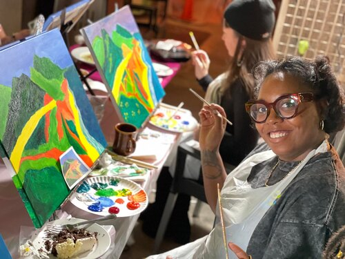
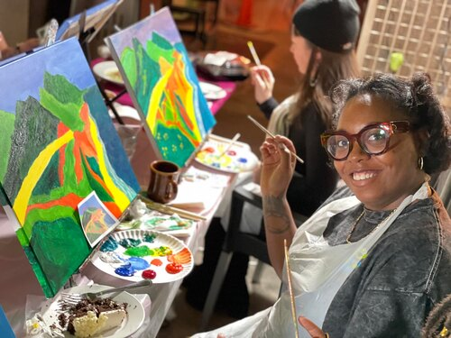

Diamond Stanley
I am currently a junior at the University of California Riverside studying psychology with plans to graduate in Spring 2023. After graduating, I plan to attend graduate school and continue gaining knowledge in the field. My dream is to earn my doctorate in clinical psychology and one day teach psychology at the university level while conducting field research. I am the first person in my family to attend college. My motto is “feel the fear and do it anyway.” In my life, when I feel challenged, instead of running and hiding, I like to face the fear and prove to myself that I can overcome any obstacle. I am passionate about helping others, travel, community engagement, and outreach. My skills include leadership, team-building, critical thinking, and problem-solving. Some soft skills that I possess in the field are excellent communication skills (verbal and written), listening, and working as a team. I am looking for career opportunities and potential internships in the psychology field.
As a young child, I wanted to help others, so I chose psychology as my major. In high school, I was a part of a community outreach program called City Year, and through that program, I was able to get first-hand experience working within my community and being an asset. We painted murals for the local middle school, cleaned up our community, and spoke with the local media and community leaders during my time there. I have also done volunteer work with the Non-profit organization Reading to Kids, which I found extremely rewarding. Working with the children and watching their eyes light up as I read the books significantly impacted my life. Currently, at UCR, I am a member of the Student Voice Committee, which is extremely exciting because I can help the students and faculty better understand how we feel about our campus. Being a student voice delegate is rewarding because I am involved in a group that genuinely cares about the students. After all, the committee is composed of students.
I have worn many hats throughout my work history. I spent five years in the restaurant and hospitality industries. I worked with companies such as Subway, Jamba Juice, Wing Stop, Red Robin, Tom's Urban, Rock and Brews, Li Orient, to name a few. My most recent position during the pandemic included working with Postmates. I recently transitioned to working with Wag, a dog-walking service, that I love because I have two dogs of my own. Wag does not feel like work because I enjoy my clients. I am looking to begin my professional career and join an internship or part-time position in psychology. The earlier mentioned positions have taught me valuable lessons on consistency, patience, responsibility, attentiveness, and resilience. I genuinely believe that the skills that I have gained throughout my work experience can be translated to other areas in my professional career. There is also so much more for me to learn and apply, and I am open to new experiences and lessons in life.
Experience
Student Voice Committee Delegate
• Attend and help facilitate programs and projects
• Survey students about important issues
• Assist in brainstorming and developing projects
Dog Walker
• Providing regular updates to clients, which includes sharing photos, videos, and locations.
• Walking multiple dogs in various weather conditions.
• Regularly recording information specifying which dogs were walked, the duration of the walks, and if there were any unusual or abnormal observations.
Delivery Driver
• Deliver food, convenience items, and small office goods to local consumers.
• Navigate city streets, traffic, and varying weather conditions to fulfill deliveries
• Responisble for picking up food orders and delivering them to customers; other times ordering food for customers
Education
UC Riverside
Portfolio


